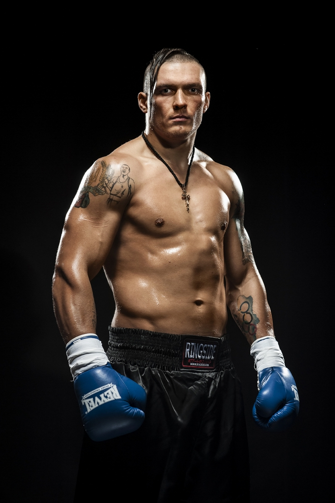

Biography

Oleksandr Usyk was born on January 17, 1987 in Simferopol, Ukraine. He began his boxing career at the age of 15 and achieved considerable success as an amateur, winning gold medals at the 2011 World Boxing Championships and the 2012 London Olympics.
Titles and Belts
- Absolute champion of the world in the first heavyweight (WBC, WBA, IBF, WBO)
- World champion in super heavyweight according to the WBA (Super), IBF, WBO, IBO versions
Key Career Highlights
- Gold medal at the World Boxing Championship in 2011
- Gold medal at the Olympic Games in London in 2012
- Debut in professional boxing in November 2013
- Winning the World Boxing Super Series (WBSS) in 2018
- Defeat Anthony Joshua in September 2021
- Alexander Usik - Tyson Fury - a professional twelve-round boxing match for the title of absolute world heavyweight champion, which took place on May 18, 2024 at the Kingdom Arena football stadium in Riyadh between the world champion according to WBA Super, IBF, WBO, IBO and The Ring Ukrainian Alexander Usik and WBC world champion Briton Tyson Fury. Oleksandr Usyk, as the winner of this confrontation, ascended to the top as the first undisputed heavyweight champion since Lennox Lewis, becoming the first holder of this prestigious title in the four-belt era and the third undisputed world champion in two weight categories in the four-belt era.